")
Treasure Trails Rewards
Introduction | All-level Rewards | Level One Rewards | Level Two Rewards | Level Three Rewards | Level Four Rewards
Introduction
Below are a few examples of the rewards you may receive after completing your clue scroll.
Each clue scroll casket will offer at least one item that is unique to treasure trails, but you may also find normal items, like ore and herbs, in your casket at the end of a trail. Also, the more difficult your clue, the greater your reward!
All-level Rewards
These rewards can be found in any treasure trail casket, from level 1 to level 4.
| Reward |
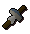 ![[image]](../../img/main/kbase/minigames/trails/trails_4/green_firelighter.gif) ![[image]](../../img/main/kbase/minigames/trails/trails_4/red_firelighter.gif) 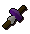 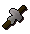 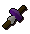 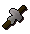 Firelighters |
![[image]](../../img/main/kbase/minigames/trails/trails_4/sweets.gif) Sweets Sweets |
![[image]](../../img/main/kbase/minigames/trails/trails_4/biscuits.gif) Biscuits Biscuits |
![[image]](../../img/main/kbase/minigames/trails/trails_4/saradomin_page.gif) ![[image]](../../img/main/kbase/minigames/trails/trails_4/guthix_page.gif) ![[image]](../../img/main/kbase/minigames/trails/trails_4/zamorak_page.gif) 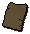 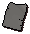 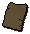 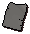 ![[image]](../../img/main/kbase/minigames/trails/trails_4/zaros_page.gif) God book pages |
Saradomin, Guthix and Zamorak arrows |
![[image]](../../img/main/kbase/minigames/trails/trails_4/bandit_camp.gif) ![[image]](../../img/main/kbase/minigames/trails/trails_4/lumber_yard.gif) ![[image]](../../img/main/kbase/minigames/trails/trails_4/miscellania.gif) 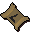 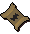 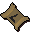 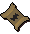 ![[image]](../../img/main/kbase/minigames/trails/trails_4/tai_bwo_wannai.gif) Scroll teleports |
![[image]](../../img/main/kbase/skills/summoning/pouches/meerkat.gif) ![[image]](../../img/main/kbase/skills/summoning/scrolls/fetch_casket.gif) Meerkats and Fetch Casket scrolls |
From all level treasure trails, you may receive gnomish firelighters, sweets and biscuits; the higher the clue scroll level, the more you are likely to receive. Sweets are a stackable food that restore a small quantity of run energy. Firelighters are tradable and can be applied to logs, and will always succeed in lighting these logs; once they are lit, they will burn with a different colour flame. Biscuits are an untradable and stackable food that restores 10-30 life points and 1 point of prayer with each bite.
![[image]](../../img/main/kbase/items/misc/torn_sarapage.gif) Torn pages can be found on Treasure Trails. Each page is numbered 1 to 4 and you will need one of each page, in order, to make a complete Prayer book. In addition, each page will be a certain colour (white for Saradomin, green for Guthix, red for Zamorak, brown for Bandos, grey for Armadyl and purple for the Ancient Book) and you will need to ensure that all pages are for the correct prayer book if you want to be able to make your damaged book whole once again. Prayer books that aren't complete only give a Prayer bonus. Complete ones give various stat bonuses.
Torn pages can be found on Treasure Trails. Each page is numbered 1 to 4 and you will need one of each page, in order, to make a complete Prayer book. In addition, each page will be a certain colour (white for Saradomin, green for Guthix, red for Zamorak, brown for Bandos, grey for Armadyl and purple for the Ancient Book) and you will need to ensure that all pages are for the correct prayer book if you want to be able to make your damaged book whole once again. Prayer books that aren't complete only give a Prayer bonus. Complete ones give various stat bonuses.
Saradomin, Guthix and Zamorak arrows will disappear once fired, and will not drop on the floor for you to reuse. They have a 1 in 10 chance of hitting for additional elemental damage (which rises to 1 in 5 if used with a Saradomin, Guthix or Zamorak bow). The elemental damage is dependent on the arrows that you are wielding: Guthix arrows deal earth damage; Zamorak arrows deal fire damage; and Saradomin arrows deal water damage.
Scroll teleports are tradable methods of getting about RuneScape. Once you use a scroll teleport, it will disappear, but not before taking you to the Bandit Camp, Lumber Yard, Miscellania, Nardah, the Phoenix Lair or Tai Bwo Wannai.
Finally, there is also a chance that you will receive a pouch or scroll for a meerkat familiar. These familiars can only be obtained from treasure trails, and they are useful in completing other treasure trails. They act as a sextant, can dig, and their scroll ability allows them to find caskets without waking any resting NPCs that would otherwise have challenged you for rousing them.
Level One Rewards
| Reward |
![[image]](../../img/main/kbase/minigames/trails/armour/black_helm_gold.gif) ![[image]](../../img/main/kbase/minigames/trails/armour/black_plate_gold.gif) ![[image]](../../img/main/kbase/minigames/trails/armour/black_legs_gold.gif) ![[image]](../../img/main/kbase/minigames/trails/armour/black_skirt_gold.gif) ![[image]](../../img/main/kbase/minigames/trails/weapons/black_kite_gold.gif) Trimmed black armours |
![[image]](../../img/main/kbase/armour/melee/trail_items/black_h1_2.gif) ![[image]](../../img/main/kbase/armour/melee/trail_items/black_h2.gif) ![[image]](../../img/main/kbase/armour/melee/trail_items/black_h3.gif) ![[image]](../../img/main/kbase/armour/melee/trail_items/black_h4.gif) ![[image]](../../img/main/kbase/armour/melee/trail_items/black_h5.gif) Black heraldic kiteshields |
![[image]](../../img/main/kbase/minigames/trails/emote/helm_1_b.gif) ![[image]](../../img/main/kbase/minigames/trails/emote/helm_2_b.gif) ![[image]](../../img/main/kbase/minigames/trails/emote/helm_3_b.gif) ![[image]](../../img/main/kbase/minigames/trails/emote/helm_4_b.gif) ![[image]](../../img/main/kbase/minigames/trails/emote/helm_5_b.gif) Black heraldic full helms |
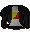 ![[image]](../../img/main/kbase/minigames/trails/emote/platebody_2_b.gif) ![[image]](../../img/main/kbase/minigames/trails/emote/platebody_3_b.gif) ![[image]](../../img/main/kbase/minigames/trails/emote/platebody_4_b.gif) ![[image]](../../img/main/kbase/minigames/trails/emote/platebody_5_b.gif) Black heraldic platebodies |
![[image]](../../img/main/kbase/minigames/trails/emote/plateskirt_1_b.gif) 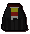 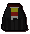 ![[image]](../../img/main/kbase/minigames/trails/emote/plateskirt_3_b.gif) ![[image]](../../img/main/kbase/minigames/trails/emote/plateskirt_4_b.gif) 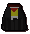 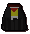 Black heraldic plateskirts |
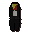 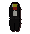 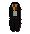 ![[image]](../../img/main/kbase/minigames/trails/emote/platelegs_4_b.gif) ![[image]](../../img/main/kbase/minigames/trails/emote/platelegs_5_b.gif) Black heraldic platelegs |
![[image]](../../img/main/kbase/armour/ranged/trail_items/leather_trim.gif) ![[image]](../../img/main/kbase/armour/ranged/trail_items/leather_chaps_trim.gif) ![[image]](../../img/main/kbase/armour/ranged/trail_items/leather_gold_trim.gif) ![[image]](../../img/main/kbase/armour/ranged/trail_items/leather_chaps_gold.gif) Trimmed leather armours |
![[image]](../../img/main/kbase/armour/mage/trail_items/wizard_hat_trim.gif) ![[image]](../../img/main/kbase/armour/mage/trail_items/wizard_hat_gold.gif) ![[image]](../../img/main/kbase/armour/mage/trail_items/wizard_top_trim.gif) ![[image]](../../img/main/kbase/armour/mage/trail_items/wizard_top_gold.gif) ![[image]](../../img/main/kbase/armour/mage/trail_items/wizard_bottom_trim.gif) ![[image]](../../img/main/kbase/armour/mage/trail_items/wizard_bottom_gold.gif) Trimmed mage robes |
![[image]](../../img/main/kbase/minigames/trails/emote/saradomin_robe_t.gif) ![[image]](../../img/main/kbase/minigames/trails/emote/saradomin_robe_l.gif) ![[image]](../../img/main/kbase/minigames/trails/emote/guthix_robe_t.gif) ![[image]](../../img/main/kbase/minigames/trails/emote/guthix_robe_l.gif) ![[image]](../../img/main/kbase/minigames/trails/emote/zamorak_robe_t.gif) ![[image]](../../img/main/kbase/minigames/trails/emote/zamorak_robe_l.gif) Saradomin, Guthix and Zamorak vestments |
![[image]](../../img/main/kbase/minigames/trails/emote/bob_shirt_black.gif) ![[image]](../../img/main/kbase/minigames/trails/emote/bob_shirt_blue.gif) ![[image]](../../img/main/kbase/minigames/trails/emote/bob_shirt_green.gif) ![[image]](../../img/main/kbase/minigames/trails/emote/bob_shirt_purple.gif) ![[image]](../../img/main/kbase/minigames/trails/emote/bob_shirt_red.gif) Bob the Cat shirts |
![[image]](../../img/main/kbase/minigames/trails/emote/pantaloons.gif) ![[image]](../../img/main/kbase/minigames/trails/emote/wig.gif) ![[image]](../../img/main/kbase/minigames/trails/emote/flared_pants.gif) ![[image]](../../img/main/kbase/minigames/trails/emote/sleeping_cap.gif) Emote enhancers* |
![[image]](../../img/main/kbase/minigames/trails/emote/elegant_shirt_male_g.gif) ![[image]](../../img/main/kbase/minigames/trails/emote/elegant_shirt_male_b.gif) ![[image]](../../img/main/kbase/minigames/trails/emote/elegant_shirt_male_r.gif) ![[image]](../../img/main/kbase/minigames/trails/emote/elegant_shirt_female_g.gif) ![[image]](../../img/main/kbase/minigames/trails/emote/elegant_shirt_female_b.gif) ![[image]](../../img/main/kbase/minigames/trails/emote/elegant_shirt_female_r.gif) ![[image]](../../img/main/kbase/minigames/trails/emote/elegant_pants_male_g.gif) ![[image]](../../img/main/kbase/minigames/trails/emote/elegant_pants_male_b.gif) ![[image]](../../img/main/kbase/minigames/trails/emote/elegant_pants_male_r.gif) ![[image]](../../img/main/kbase/minigames/trails/emote/elegant_pants_female_g.gif) ![[image]](../../img/main/kbase/minigames/trails/emote/elegant_pants_female_b.gif) ![[image]](../../img/main/kbase/minigames/trails/emote/elegant_pants_female_r.gif) Red, blue and green elegant costumes (male and female) |
![[image]](../../img/main/kbase/minigames/trails/clothing/black_beret.gif) ![[image]](../../img/main/kbase/minigames/trails/clothing/blue_beret.gif) ![[image]](../../img/main/kbase/minigames/trails/clothing/white_beret.gif) Berets |
![[image]](../../img/main/kbase/minigames/trails/accessories/highway_mask.gif) Highway masks |
![[image]](../../img/main/kbase/minigames/trails/emote/amulet_of_magic.gif) Amulet of Magic |
![[image]](../../img/main/kbase/minigames/trails/emote/composite_bow_willow.gif) ![[image]](../../img/main/kbase/minigames/trails/emote/composite_bow_yew.gif) ![[image]](../../img/main/kbase/minigames/trails/emote/composite_bow_magic.gif) Willow, yew and magic composite bows |
![[image]](../../img/main/kbase/minigames/trails/trails_3/black_crossbow.gif) ![[image]](../../img/main/kbase/minigames/trails/trails_3/black_bolts.gif) Black crossbow and black crossbow bolts |
![[image]](../../img/main/kbase/minigames/trails/trails_3/black_cane.gif) Black cane |
![[image]](../../img/main/kbase/minigames/trails/trails_3/spiked_helmet.gif) Spiked helmet |
* Emote enhancers modify existing emotes while you are wearing them. Flares modify the 'dance' emote, the wig modifies the 'angry' emote, pantaloons modify the 'bow' emote and the sleeping cap modifies the 'yawn' emote.
Level Two Rewards
| Reward |
![[image]](../../img/main/kbase/minigames/trails/armour/addy_helm_gold.gif) ![[image]](../../img/main/kbase/minigames/trails/armour/addy_plate_gold.gif) ![[image]](../../img/main/kbase/minigames/trails/armour/addy_legs_gold.gif) ![[image]](../../img/main/kbase/minigames/trails/armour/addy_skirt_gold.gif) ![[image]](../../img/main/kbase/minigames/trails/weapons/addy_kite_gold.gif) Trimmed adamant armours |
![[image]](../../img/main/kbase/armour/melee/trail_items/addy_h1_2.gif) ![[image]](../../img/main/kbase/armour/melee/trail_items/addy_h2.gif) ![[image]](../../img/main/kbase/armour/melee/trail_items/addy_h3.gif) ![[image]](../../img/main/kbase/armour/melee/trail_items/addy_h4.gif) ![[image]](../../img/main/kbase/armour/melee/trail_items/addy_h5.gif) Adamant heraldic kiteshields |
![[image]](../../img/main/kbase/minigames/trails/emote/helm_1_a.gif) ![[image]](../../img/main/kbase/minigames/trails/emote/helm_2_a.gif) ![[image]](../../img/main/kbase/minigames/trails/emote/helm_3_a.gif) ![[image]](../../img/main/kbase/minigames/trails/emote/helm_4_a.gif) ![[image]](../../img/main/kbase/minigames/trails/emote/helm_5_a.gif) Adamant heraldic full helms |
![[image]](../../img/main/kbase/minigames/trails/emote/platebody_1_a.gif) 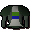 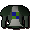 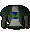 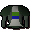 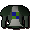 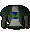 ![[image]](../../img/main/kbase/minigames/trails/emote/platebody_5_a.gif) Adamant heraldic platebodies |
![[image]](../../img/main/kbase/minigames/trails/emote/plateskirt_1_a.gif) ![[image]](../../img/main/kbase/minigames/trails/emote/plateskirt_2_a.gif) ![[image]](../../img/main/kbase/minigames/trails/emote/plateskirt_3_a.gif) ![[image]](../../img/main/kbase/minigames/trails/emote/plateskirt_4_a.gif) 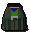 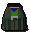 Adamant heraldic plateskirts |
![[image]](../../img/main/kbase/minigames/trails/emote/platelegs_1_a.gif) 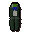 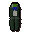 ![[image]](../../img/main/kbase/minigames/trails/emote/platelegs_3_a.gif) ![[image]](../../img/main/kbase/minigames/trails/emote/platelegs_4_a.gif) 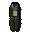 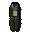 Adamant heraldic platelegs |
![[image]](../../img/main/kbase/armour/ranged/trail_items/green_body_trim.gif) ![[image]](../../img/main/kbase/armour/ranged/trail_items/green_chaps_trim.gif) ![[image]](../../img/main/kbase/armour/ranged/trail_items/green_body_gold.gif) ![[image]](../../img/main/kbase/armour/ranged/trail_items/green_chaps_gold.gif) Trimmed green dragonhide armour |
![[image]](../../img/main/kbase/minigames/trails/emote/saradomin_cloak.gif) ![[image]](../../img/main/kbase/minigames/trails/emote/saradomin_mitre.gif) ![[image]](../../img/main/kbase/minigames/trails/emote/guthix_cloak.gif) ![[image]](../../img/main/kbase/minigames/trails/emote/guthix_mitre.gif) ![[image]](../../img/main/kbase/minigames/trails/emote/zamorak_cloak.gif) ![[image]](../../img/main/kbase/minigames/trails/emote/zamorak_mitre.gif) Saradomin, Guthix and Zamorak cloaks and mitres |
![[image]](../../img/main/kbase/minigames/trails/emote/armadyl_robe_t.gif) ![[image]](../../img/main/kbase/minigames/trails/emote/armadyl_robe_l.gif) 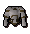 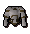 ![[image]](../../img/main/kbase/minigames/trails/emote/bandos_robe_l.gif) 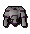 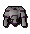 ![[image]](../../img/main/kbase/minigames/trails/emote/zaros_robe_l.gif) Armadyl, Bandos and Ancient vestments |
![[image]](../../img/main/kbase/minigames/trails/emote/elegant_shirt_male.gif) ![[image]](../../img/main/kbase/minigames/trails/emote/elegant_shirt_male_p.gif) ![[image]](../../img/main/kbase/minigames/trails/emote/elegant_shirt_female.gif) ![[image]](../../img/main/kbase/minigames/trails/emote/elegant_shirt_female_p.gif) ![[image]](../../img/main/kbase/minigames/trails/emote/elegant_pants_male.gif) ![[image]](../../img/main/kbase/minigames/trails/emote/elegant_pants_male_p.gif) ![[image]](../../img/main/kbase/minigames/trails/emote/elegant_pants_female.gif) ![[image]](../../img/main/kbase/minigames/trails/emote/elegant_pants_female_p.gif) Black (male), white (female) and purple (male and female) elegant costumes |
![[image]](../../img/main/kbase/minigames/trails/clothing/red_strawboater.gif) ![[image]](../../img/main/kbase/minigames/trails/clothing/orange_strawboater.gif) ![[image]](../../img/main/kbase/minigames/trails/clothing/green_strawboater.gif) ![[image]](../../img/main/kbase/minigames/trails/clothing/blue_strawboater.gif) ![[image]](../../img/main/kbase/minigames/trails/clothing/black_strawboater.gif) Straw boaters |
![[image]](../../img/main/kbase/armour/mage/wizardboots.gif) Wizard boots |
![[image]](../../img/main/kbase/armour/ranged/ranger_boots.gif) Ranger boots |
![[image]](../../img/main/kbase/minigames/trails/accessories/black_headband.gif) ![[image]](../../img/main/kbase/minigames/trails/accessories/red_headband.gif) ![[image]](../../img/main/kbase/minigames/trails/accessories/brown_headband.gif) Head bands |
![[image]](../../img/main/kbase/minigames/trails/emote/amulet_of_strength.gif) Amulet of Strength |
| Willow, yew and magic composite bows |
![[image]](../../img/main/kbase/minigames/trails/trails_3/bat_mask.gif) ![[image]](../../img/main/kbase/minigames/trails/trails_3/cat_mask.gif) ![[image]](../../img/main/kbase/minigames/trails/trails_3/penguin_mask.gif) ![[image]](../../img/main/kbase/minigames/trails/trails_3/sheep_mask.gif) ![[image]](../../img/main/kbase/minigames/trails/trails_3/wolf_mask.gif) Animal masks |
![[image]](../../img/main/kbase/minigames/trails/trails_3/adamant_cane.gif) Adamant cane |
![[image]](../../img/main/kbase/minigames/trails/trails_3/pith_helmet.gif) Pith helmet |
| 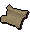 Court Summons* |
* Court summons, found from medium and hard clue scrolls, allow you to try or defend a case at the Seers' Village courthouse.
Level Three Rewards
| Reward |
![[image]](../../img/main/kbase/minigames/trails/emote/fighter_helm.gif) ![[image]](../../img/main/kbase/minigames/trails/emote/silver_plate_body.gif) ![[image]](../../img/main/kbase/minigames/trails/emote/silver_plate_legs.gif) ![[image]](../../img/main/kbase/minigames/trails/emote/fighter_shield.gif) Third-Age warrior armour |
![[image]](../../img/main/kbase/minigames/trails/emote/mage_hat.gif) ![[image]](../../img/main/kbase/minigames/trails/emote/mage_torso.gif) ![[image]](../../img/main/kbase/minigames/trails/emote/mage_legs.gif) ![[image]](../../img/main/kbase/minigames/trails/emote/mage_amulet.gif) Third-Age mage robes |
![[image]](../../img/main/kbase/minigames/trails/emote/ranger_coif.gif) ![[image]](../../img/main/kbase/minigames/trails/emote/ranger_torso.gif) ![[image]](../../img/main/kbase/minigames/trails/emote/ranger_legs.gif) ![[image]](../../img/main/kbase/minigames/trails/emote/ranger_vambraces.gif) Third-Age ranger armour |
![[image]](../../img/main/kbase/minigames/trails/armour/rune_helm_saradomin.gif) ![[image]](../../img/main/kbase/minigames/trails/armour/rune_plate_saradomin.gif) ![[image]](../../img/main/kbase/minigames/trails/armour/rune_legs_saradomin.gif) ![[image]](../../img/main/kbase/minigames/trails/armour/rune_skirt_saradomin.gif) ![[image]](../../img/main/kbase/minigames/trails/weapons/rune_kite_saradomin.gif) ![[image]](../../img/main/kbase/minigames/trails/armour/rune_helm_guthix.gif) ![[image]](../../img/main/kbase/minigames/trails/armour/rune_plate_guthix.gif) ![[image]](../../img/main/kbase/minigames/trails/armour/rune_legs_guthix.gif) ![[image]](../../img/main/kbase/minigames/trails/armour/rune_skirt_guthix.gif) ![[image]](../../img/main/kbase/minigames/trails/weapons/rune_kite_guthix.gif) 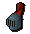 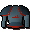 ![[image]](../../img/main/kbase/minigames/trails/armour/rune_legs_zamorak.gif) ![[image]](../../img/main/kbase/minigames/trails/armour/rune_skirt_zamorak.gif) ![[image]](../../img/main/kbase/minigames/trails/weapons/rune_kite_zamorak.gif) Rune trimmed armour/god armour |
![[image]](../../img/main/kbase/minigames/trails/armour/rune_helm_guilded.gif) ![[image]](../../img/main/kbase/minigames/trails/armour/rune_plate_guilded.gif) ![[image]](../../img/main/kbase/minigames/trails/armour/rune_legs_guilded.gif) ![[image]](../../img/main/kbase/minigames/trails/armour/rune_skirt_guilded.gif) ![[image]](../../img/main/kbase/minigames/trails/weapons/rune_kite_guilded.gif) Gold plated (gilded) armour |
![[image]](../../img/main/kbase/armour/melee/trail_items/rune_h1_2.gif) ![[image]](../../img/main/kbase/armour/melee/trail_items/rune_h2.gif) ![[image]](../../img/main/kbase/armour/melee/trail_items/rune_h3.gif) ![[image]](../../img/main/kbase/armour/melee/trail_items/rune_h4.gif) ![[image]](../../img/main/kbase/armour/melee/trail_items/rune_h5.gif) Rune heraldic kiteshields |
![[image]](../../img/main/kbase/minigames/trails/emote/helm_1_r.gif) ![[image]](../../img/main/kbase/minigames/trails/emote/helm_2_r.gif) ![[image]](../../img/main/kbase/minigames/trails/emote/helm_3_r.gif) ![[image]](../../img/main/kbase/minigames/trails/emote/helm_4_r.gif) ![[image]](../../img/main/kbase/minigames/trails/emote/helm_5_r.gif) Rune heraldic full helms |
![[image]](../../img/main/kbase/minigames/trails/emote/platebody_1_r.gif) 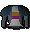 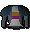 ![[image]](../../img/main/kbase/minigames/trails/emote/platebody_3_r.gif) ![[image]](../../img/main/kbase/minigames/trails/emote/platebody_4_r.gif) 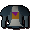 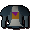 Rune heraldic platebodies |
![[image]](../../img/main/kbase/minigames/trails/emote/plateskirt_1_r.gif) ![[image]](../../img/main/kbase/minigames/trails/emote/plateskirt_2_r.gif) ![[image]](../../img/main/kbase/minigames/trails/emote/plateskirt_3_r.gif) 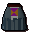 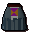 ![[image]](../../img/main/kbase/minigames/trails/emote/plateskirt_5_r.gif) Rune heraldic plateskirts |
![[image]](../../img/main/kbase/minigames/trails/emote/platelegs_1_r.gif) 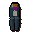 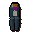 ![[image]](../../img/main/kbase/minigames/trails/emote/platelegs_3_r.gif) 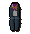 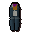 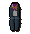 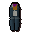 Rune heraldic platelegs |
![[image]](../../img/main/kbase/minigames/trails/emote/saradomin_chest.gif) ![[image]](../../img/main/kbase/minigames/trails/emote/saradomin_coif.gif) ![[image]](../../img/main/kbase/minigames/trails/emote/saradomin_chaps.gif) ![[image]](../../img/main/kbase/minigames/trails/emote/saradomin_vambraces2.gif) ![[image]](../../img/main/kbase/minigames/trails/emote/guthix_chest.gif) ![[image]](../../img/main/kbase/minigames/trails/emote/guthix_coif.gif) ![[image]](../../img/main/kbase/minigames/trails/emote/guthix_chaps.gif) ![[image]](../../img/main/kbase/minigames/trails/emote/guthix_vambraces2.gif) ![[image]](../../img/main/kbase/minigames/trails/emote/zamorak_chest.gif) ![[image]](../../img/main/kbase/minigames/trails/emote/zamorak_coif.gif) ![[image]](../../img/main/kbase/minigames/trails/emote/zamorak_chaps.gif) ![[image]](../../img/main/kbase/minigames/trails/emote/zamorak_vambraces2.gif) Blessed dragonhide armour |
![[image]](../../img/main/kbase/armour/ranged/trail_items/blue_body_trim.gif) ![[image]](../../img/main/kbase/armour/ranged/trail_items/blue_chaps_trim.gif) ![[image]](../../img/main/kbase/armour/ranged/trail_items/blue_body_gold.gif) ![[image]](../../img/main/kbase/armour/ranged/trail_items/blue_chaps_gold.gif) Trimmed blue dragonhide armour |
![[image]](../../img/main/kbase/minigames/trails/emote/saradomin_staff.gif) ![[image]](../../img/main/kbase/minigames/trails/emote/saradomin_scarf.gif) ![[image]](../../img/main/kbase/minigames/trails/emote/guthix_staff.gif) ![[image]](../../img/main/kbase/minigames/trails/emote/guthix_scarf.gif) ![[image]](../../img/main/kbase/minigames/trails/emote/zamorak_staff.gif) ![[image]](../../img/main/kbase/minigames/trails/emote/zamorak_scarf.gif) Saradomin, Guthix and Zamorak croziers and stoles |
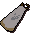 ![[image]](../../img/main/kbase/minigames/trails/emote/armadyl_mitre.gif) 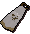 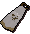 ![[image]](../../img/main/kbase/minigames/trails/emote/bandos_mitre.gif) ![[image]](../../img/main/kbase/minigames/trails/emote/zaros_cloak.gif) ![[image]](../../img/main/kbase/minigames/trails/emote/zaros_mitre.gif) Armadyl, Bandos and Ancient cloaks and mitres |
![[image]](../../img/main/kbase/armour/mage/trail_items/enchanted_hat.gif) ![[image]](../../img/main/kbase/armour/mage/trail_items/enchanted_top.gif) ![[image]](../../img/main/kbase/armour/mage/trail_items/enchanted_bottom.gif) Enchanted robes |
![[image]](../../img/main/kbase/minigames/trails/clothing/black_cavalier.gif) ![[image]](../../img/main/kbase/minigames/trails/clothing/tanned_cavalier.gif) ![[image]](../../img/main/kbase/minigames/trails/clothing/brown_cavalier.gif) Cavalier |
![[image]](../../img/main/kbase/armour/ranged/robinhood.gif) Robin Hood hat |
![[image]](../../img/main/kbase/minigames/trails/clothing/pirate_hat.gif) Pirate hat |
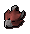 ![[image]](../../img/main/kbase/minigames/trails/trails_3/white_unicorn_mask.gif) ![[image]](../../img/main/kbase/minigames/trails/trails_3/black_unicorn_mask.gif) ![[image]](../../img/main/kbase/minigames/trails/trails_3/greendragon_mask.gif) ![[image]](../../img/main/kbase/minigames/trails/trails_3/bluedragon_mask.gif) ![[image]](../../img/main/kbase/minigames/trails/trails_3/reddragon_mask.gif) Animal masks |
![[image]](../../img/main/kbase/minigames/trails/emote/amulet_of_glory.gif) Amulet of Glory |
| Willow, yew and magic composite bows |
![[image]](../../img/main/kbase/minigames/trails/trails_3/rune_cane.gif) Rune cane |
![[image]](../../img/main/kbase/minigames/trails/trails_3/top_hat.gif) Top hat |
| Court Summons* |
* Court summons, found from medium and hard clue scrolls, allow you to try or defend a case at the Seers' Village courthouse.
Level Four Rewards
| Reward |
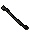 ![[image]](../../img/main/kbase/minigames/trails/trails_4/prayer_cloak.gif) ![[image]](../../img/main/kbase/minigames/trails/trails_4/prayer_head.gif) ![[image]](../../img/main/kbase/minigames/trails/trails_4/prayer_robetop.gif) 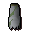 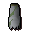 Third-Age druidic equipment |
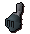 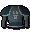 ![[image]](../../img/main/kbase/minigames/trails/armour/rune_legs_armadyl.gif) ![[image]](../../img/main/kbase/minigames/trails/armour/rune_skirt_armadyl.gif) ![[image]](../../img/main/kbase/minigames/trails/armour/rune_kite_armadyl.gif) ![[image]](../../img/main/kbase/minigames/trails/armour/rune_helm_bandos.gif) ![[image]](../../img/main/kbase/minigames/trails/armour/rune_plate_bandos.gif) ![[image]](../../img/main/kbase/minigames/trails/armour/rune_legs_bandos.gif) ![[image]](../../img/main/kbase/minigames/trails/armour/rune_skirt_bandos.gif) ![[image]](../../img/main/kbase/minigames/trails/armour/rune_kite_bandos.gif) ![[image]](../../img/main/kbase/minigames/trails/armour/rune_helm_zaros.gif) 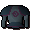 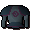 ![[image]](../../img/main/kbase/minigames/trails/armour/rune_legs_zaros.gif) 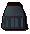 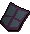 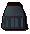 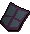 Rune trimmed armour/god armour |
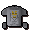 ![[image]](../../img/main/kbase/minigames/trails/emote/armadyl_coif.gif) ![[image]](../../img/main/kbase/minigames/trails/emote/armadyl_chaps.gif) 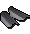 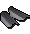 ![[image]](../../img/main/kbase/minigames/trails/emote/bandos_chest.gif) 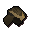 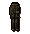 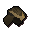 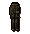 ![[image]](../../img/main/kbase/minigames/trails/emote/bandos_vambraces.gif) 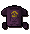 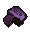 ![[image]](../../img/main/kbase/minigames/trails/emote/zaros_chaps.gif) 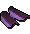 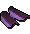 Blessed dragonhide armour |
![[image]](../../img/main/kbase/minigames/trails/emote/armadyl_staff.gif) 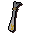 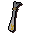 ![[image]](../../img/main/kbase/minigames/trails/emote/bandos_staff.gif) 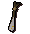 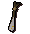 ![[image]](../../img/main/kbase/minigames/trails/emote/zaros_staff.gif) ![[image]](../../img/main/kbase/minigames/trails/emote/zaros_scarf.gif) Armadyl, Bandos and Ancient croziers and stoles |
![[image]](../../img/main/kbase/minigames/trails/trails_4/fury_kit.gif) ![[image]](../../img/main/kbase/minigames/trails/trails_4/dragonhelm_kit_o.gif) ![[image]](../../img/main/kbase/minigames/trails/trails_4/dragonbody_kit_o.gif) 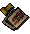 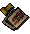 ![[image]](../../img/main/kbase/minigames/trails/trails_4/dragonbody_kit_s.gif) ![[image]](../../img/main/kbase/minigames/trails/trails_4/dragonlegs_kit_s.gif) ![[image]](../../img/main/kbase/minigames/trails/trails_4/dragonshield_kit_s.gif) Ornament kits* |
| Saradomin, Guthix and Zamorak bows |
![[image]](../../img/main/kbase/minigames/trails/trails_4/bat_staff.gif) ![[image]](../../img/main/kbase/minigames/trails/trails_4/cat_staff.gif) ![[image]](../../img/main/kbase/minigames/trails/trails_4/penguin_staff.gif) Animal staves^ |
![[image]](../../img/main/kbase/minigames/trails/trails_3/blackdragon_mask.gif) ![[image]](../../img/main/kbase/minigames/trails/trails_3/bronzedragon_mask.gif) ![[image]](../../img/main/kbase/minigames/trails/trails_3/irondragon_mask.gif) ![[image]](../../img/main/kbase/minigames/trails/trails_3/steeldragon_mask.gif) Animal masks |
* Ornament kits can be used on the relevant armour to improve its appearance. The decoration can be removed and put back into its kit at any time. Ornament kits are tradable, but the decorated items are not. You may not lend an item that has been decorated in such a way.
^ Animal staves have the attack stats of a mystic battlestaff, with the prayer bonuses of a crozier. Each staff counts as an unlimited elemental rune type. If you wear a staff and its corresponding animal mask, you will be able to perform a 'totem animal' emote.
Click here to return to the Treasure Trails main page

|
More articles in Distractions and Diversions
|
|
|
Further Help
If this article does not help you, you may find the following sections of the RuneScape site helpful:
|
|